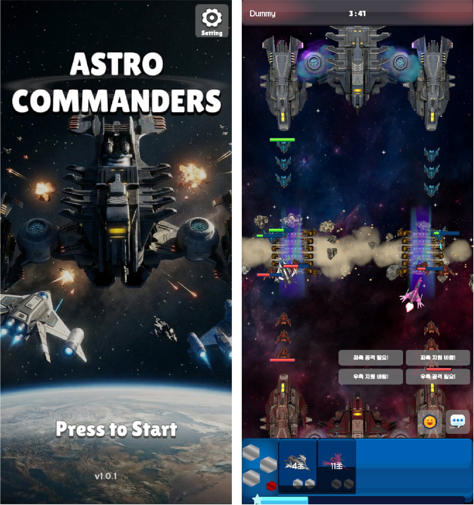

| 개발 인원 | 개발 5명 · 기획 7명 |
|---|---|
| 게임 장르 | PVP · 증강 · 전략 · 디펜스 · 모바일 |
| 개발 기간 | 2026.02.09 ~ 2026.04.10 (약 2개월) |
| 기술 스택 | Unity 6 / Photon Fusion / Firebase |
| 담당 업무 | UI·UX 설계 인/아웃게임 UI·UX 전반 실시간 커뮤니케이션 매크로 채팅 & 핑 연출 · 공용 UI DOTween 연출, 기본 UI 커스텀 전체 UI 관리 BaseUI · Stack 기반 UIManager |
주요 기능
- DB + CSV 데이터 관리 — 정적 데이터(CSV)와 동적 데이터(Firestore)를 결합해 UI에 즉시 반영. async/await로 UI 프리징 방지, 트랜잭션 플래그로 중복 요청 차단
- 디자인 패턴 — MVP로 모델·뷰가 바뀌어도 구조 유지, 옵저버로 골드·승리 수·영웅 데이터 변경 시 UI 자동 갱신, 주요 매니저는 싱글톤
- UIManager · BaseUI — 공통 로직을 BaseUI로 묶어 코드 중복 제거, Stack으로 팝업 순서·뒤로가기 보장, Popup·TopLayer 컨테이너로 순서 꼬임 방지
- 매크로 & 핑 — 매크로는 PlayerPrefs 로컬 저장으로 DB 부담 감소, SO로 기획자가 직접 추가. 차단은 수신 측 필터링, 핑은 좌표 정규화로 해상도와 무관하게 같은 위치
- HP바 — 오브젝트 풀링으로 GC·프레임 드랍 억제,
[OnChangedRender]이벤트 기반 갱신으로 트래픽 절감, 팀 색상·영웅 마크 표시 - DOTween 연출 · 공용 UI — 시퀀스로 묶어 동시 재생·콜백 관리, BaseUI와 결합해 필요할 때 오버라이드. 토글·스와이프·확인 팝업을 팀 공용 UI로 제공
출시Google Play 스토어
20+BaseUI를 상속한 UI 클래스
12명개발 5 · 기획 7 협업
283담당 커밋